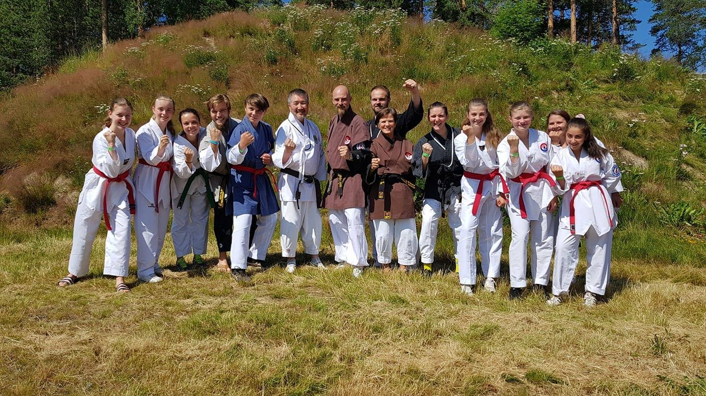
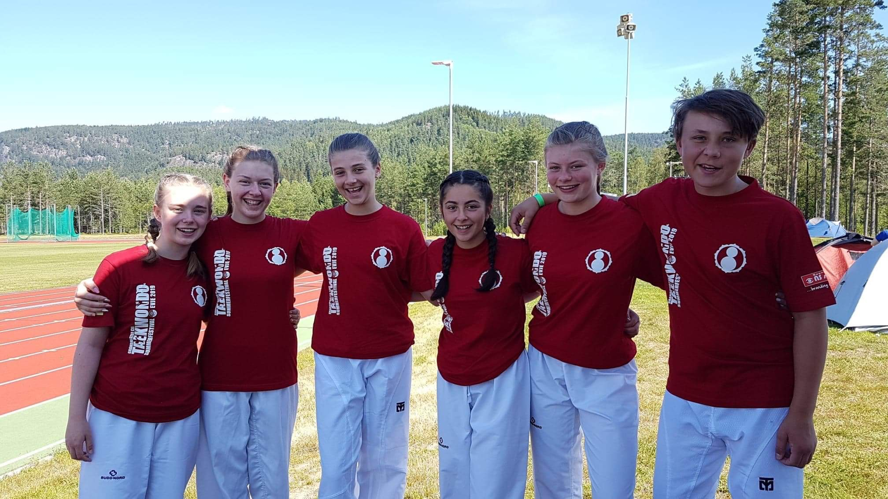
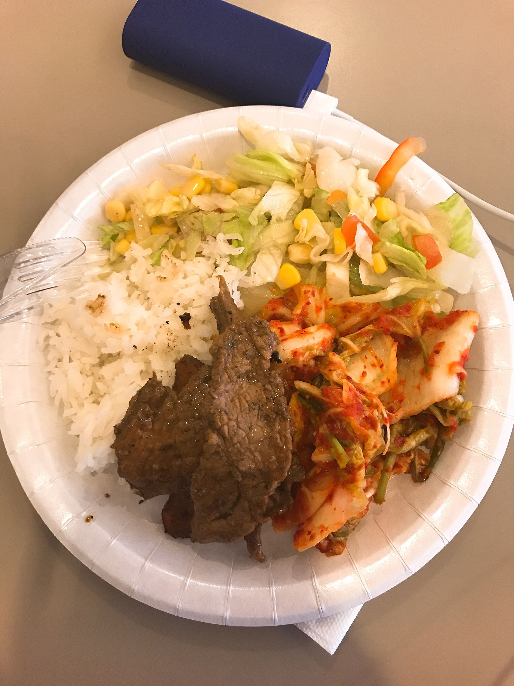
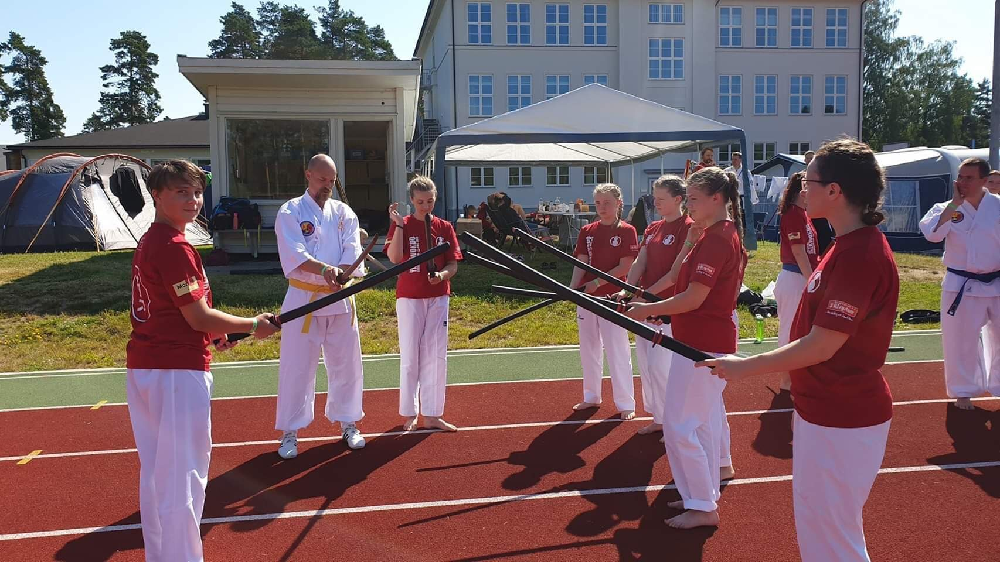
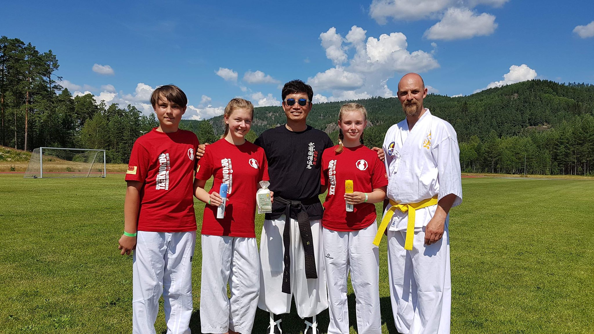
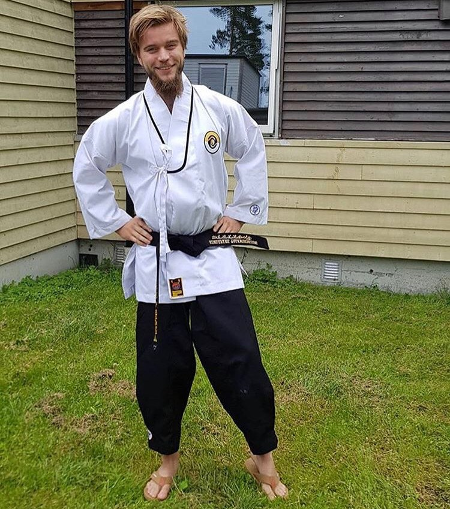
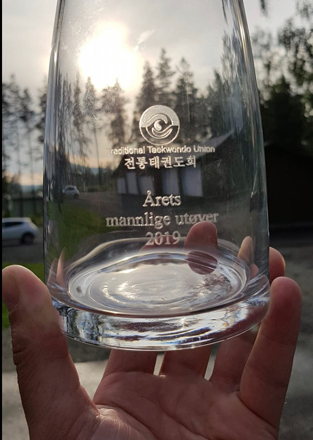
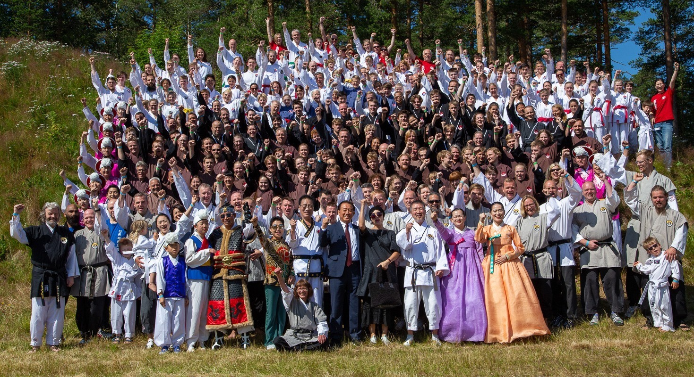

Innlegg
Årets sommerfestival bød på mange spennende opplevelser

13 stykker fra Ringerike Taekwondo Klubb dro på TTU sin sommerfestival i Evje. Det er 9 mer enn i fjor, men neste år håper vi på å være enda flere, for dette er noe som passer for alle!
Koselig sted
Sommerfestivalen ble i år holdt i Evje, et sted på sørlandet som er cirka en time unna Kristiansand. Det var et idyllisk sted, med strand rett i nærheten. Man kunne sove i telt, på internat, klasserom eller hotell.

Ikke bare taekwondo I tillegg til å trene taekwondo var det mulighet til å dra til Mineralparken. Mineralparken er en familiepark der man kan lære mer om mineraler, klatre, bade og drive med lazer-tag og boblefotball. Der var det en felles dag der alle sammen dro, men man hadde fri tilgang under hele oppholdet. Koreansk kultur I år var det også en mulighet til å lære mer om koreansk kultur, fordi det var undervisning i K-Pop (koreansk pop) og tradisjonell koreansk musikk og dans.
Mye forskjellig trening Det var i gjennomsnitt tre treninger om dagen, der temaene var veldig varierte. I tillegg til trenere fra Norge og Danmark, var det også koreanske instruktører der. Man ble delt opp i grupper etter hvilken beltegrad man hadde, men det var også fellestreninger. Kyeongdang En annen kampsport som ble representert på denne leieren var Kyeongdang, som er en kampsport som fokuserer på blant annet sverd. Det fikk man mulighet til å trene hver dag av en korensk instruktør. På den siste treningen kunne alle som hadde vært med prøve å skjære gjennom en plastflaske med et sverd. De som klarte det fikk koreansk havsalt, tannbørste og tannkrem fra Korea.

Meditasjon og Yoga Hver morgen kunne man trene Ki-gong med Master Cho eller Yoga med Anna Kim. Det var en fin og rolig start på dagen. Anders til master På leieren ble det holdt cup, dan- og mastergradering. Anders Stiksrud Helmen graderte til master (4 dan) denne sommerfestivalen med en strålende prestasjon og en ekstremt god innsats. Gratulerer!
Reinhardt til "Årets mannlige utøver" Noe annet gøy som skjedde var at Reinhardt Skøien ble kåret til årets mannlige utøver grunnet hans bra innsats og harde jobbing i vår nye dojang. Han er der ofte, gjør mye og jobber hardt! Det var virkelig fortjent!
Minneverdig og spennende Alt i alt var dette en minneverdig sommerfestival som man kunne lære mer om koreansk kultur og å være i Mineralparken i tillegg til å trene taekwondo. I tillegg til dette fikk vi en ny master og prisen “årets mannlige utøver”. Sommerfestival er noe alle virkelig bør bli med på. Man får mulighet til å gjøre mye annet enn taekwondo også, som er veldig interessant. Sosialt er det også, for man blir kjent med mange nye mennesker. Det er verdt det! Bli med neste gang du også da vel!
- Gjerne sjekk ut Ringerike Taekwondo Klubb offentlige instagram konto: @ringerike_taekwondo